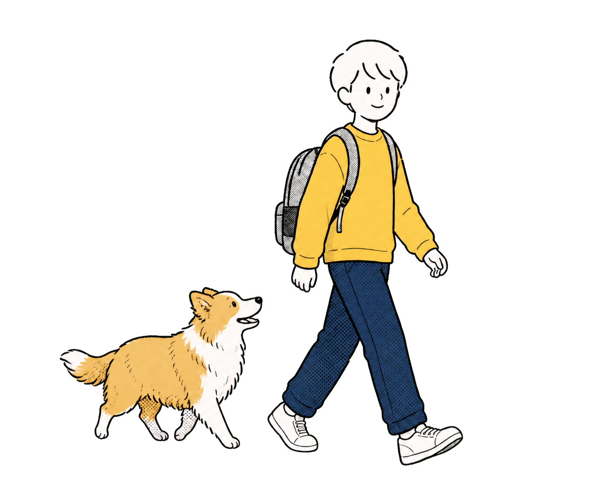
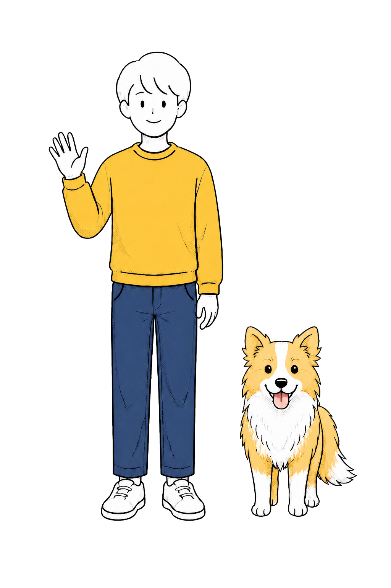
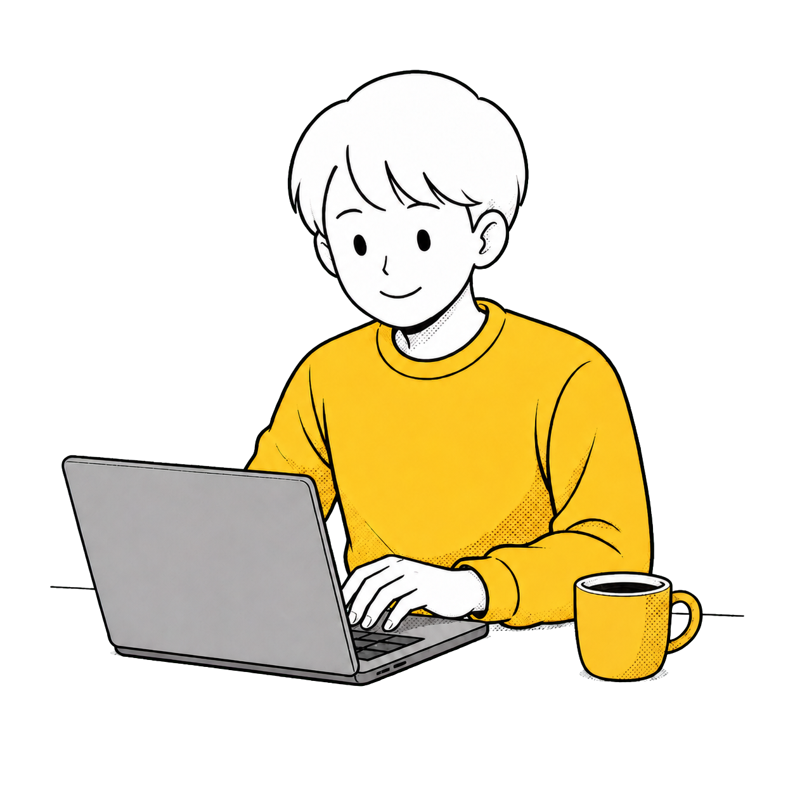

悉尼大学 · QS 28
主修数据挖掘与机器学习、信息技术项目管理、数据库管理系统、基于模型的软件工程、数据结构与算法、多媒体设计与创作。

HAO ANDA
AI PRODUCT MANAGERAI BUILDERPRODUCT THINKER

↓ 往下滑
Education
从工程与技术基础出发，继续通过计算机科学和产品实践理解复杂问题。
主修数据挖掘与机器学习、信息技术项目管理、数据库管理系统、基于模型的软件工程、数据结构与算法、多媒体设计与创作。

本科阶段建立工程与技术基础，也形成了以问题拆解、数据和系统视角理解产品的工作方式。

Internship
Personal Work
从真实使用场景出发，把复杂问题收束成可验证的产品体验。
Strengths
把问题看清楚，再把过程组织成让人愿意使用的产品。
01
从用户问题、约束条件到可验证方案，持续梳理复杂信息与决策路径。
02
关注数据的来源、完整性、权限与维护机制，让产品能力建立在可靠信息之上。
03
能在业务、产品、设计与技术之间对齐目标，推动方案进入真实工作流。
04
为 AI 能力设定边界、测试场景与反馈闭环，让迭代可以被衡量。
Skills
把产品方法、数据能力和 AI 工作流组合成可落地的实践。
01
用户调研、需求拆解、PRD、信息架构、原型设计与 Web MVP。
02
SQL、Python、数据清洗、指标设计与业务看板。
03
RAG、Agent、知识库、Workflow Design、评测与 Bad Case 分析。
04
HTML/CSS、原型实现、iOS MVP，以及与工程团队共同推进落地。